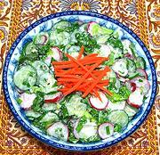

|
Spring SaladUzbek - Salat Vesennii | ||||
| Makes: Effort: Sched: DoAhead: |
1-1/4 # * 20 min Part |
This simple salad incorporates lettuce, not a common ingredient in Uzbek salads. You can do the slicing well in advance and the tearing in advance but best to not mix in the dressing until ready to serve. | |||
|
|
10 5 2/3 1 6 ------ 1-1/2 3 |
oz oz t c lrg ---- T T |
Cucumbers (1) Radishes Salt Scallion Tops Lettuce Leaf (2) -- Dressing Mayonnaise Sour Cream |
This recipe maes 5 salad size servings. Make - (20 min work)
|